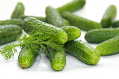

Free samples
There's big news at OrganicUtopia this spring! From time to time we lke to give out samples of our products so you can see how great they are. At these events we have our expert staff available to hand out free samples* and answer any questions you may have. Every third Friday in the month between 6:30 - 8:30 pm we generally have something going on, please join us if you can, it's fun for all!
